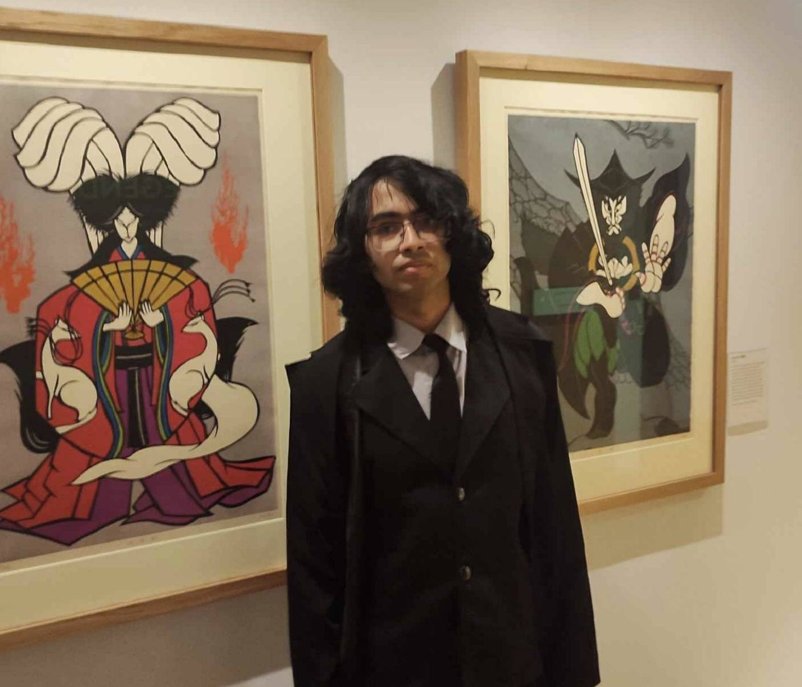

Ayub Kharel
DPhil Student in Statistics
University of Oxford
I am a DPhil student in the Department of Statistics at the University of Oxford, supervised by Robin Evans and Patrick Rebeschini. I am part of Oxford Stats' CSML (Computational Statistics and Machine Learning) group. My research interests lie in deep learning theory, causal inference, and structured reasoning and security in foundation models.
Research Interests
- Deep learning theory
- Causal inference
- Structured reasoning and security in foundation models
Education
DPhil in Statistics
University of Oxford, 2024 – present
Supervised by Robin Evans and Patrick Rebeschini. CSML group.
MSc in Mathematical Sciences
University of Oxford, 2023 – 2024
Dissertation on diffusion model theory. Studied stochastic analysis and machine learning.
BSc in Mathematics
Durham University, 2021 – 2024
Focus on analysis, probability and stochastic processes.
Contact
- Email: ayub.kharel@stats.ox.ac.uk
- Office: Room 1.07, Department of Statistics
- GitHub: github.com/akharel2000
- Department: Oxford Statistics profile